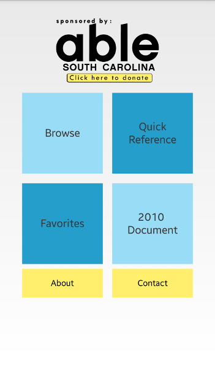
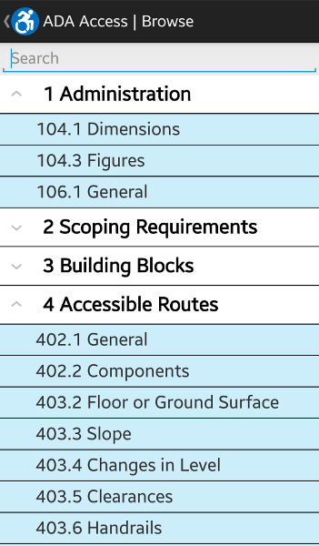
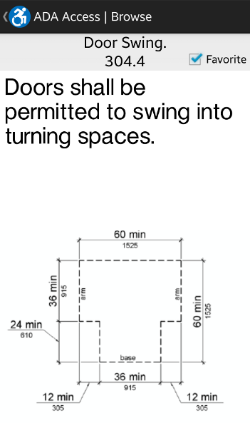
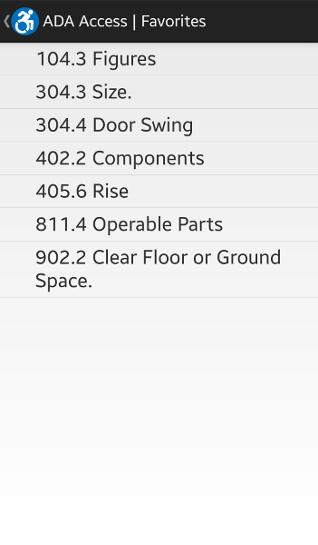

An Android app for quickly referencing the ADA guidelines
Home | Download | About

ADA Access, sponsored by AbleSC, will be designed for storing and displaying architectural standards set in place by the Americans with Disabilities Act (ADA). These standards include specifications for handicap-accessible construction of dorms, social service centers, medical care facilities, etc. These specifications include door widths and ramp angles and lengths, for example. ADA Access should make it easy and efficient to access these standards when in the field or when a stationary and/or written source is not available.
 


Click here to download the latest development release
*ADA Access is not affiliated with the ADA.